Introducción
¿En qué orden jugar Wolfenstein?
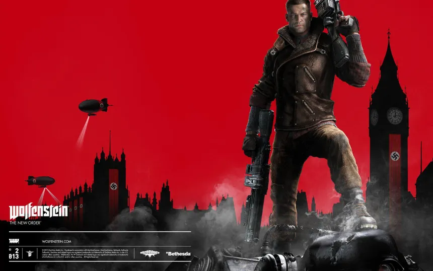
La saga Wolfenstein es una de las franquicias más icónicas de los videojuegos, centrada en la lucha contra el régimen nazi en una realidad alternativa. A lo largo de los juegos, seguimos la historia de B.J. Blazkowicz, un soldado que se convierte en símbolo de la resistencia.
La historia combina hechos históricos con ciencia ficción, tecnología avanzada y experimentos que alteran el curso de la guerra, creando uno de los universos más intensos y oscuros del gaming.
Orden cronológico de Wolfenstein
Castle Wolfenstein (1981)
Wolfenstein 3D (1992)
Return to Castle Wolfenstein (2001)
Wolfenstein: The Old Blood
Wolfenstein: The New Order Wolfenstein II: The New Colossus Wolfenstein II: The New Colossus (DLCS) Wolfenstein: Youngblood
Historia completa
A continuación se desarrollará la historia completa de la saga Wolfenstein, explicando cada evento importante, personajes clave y momentos que definen la guerra contra el régimen nazi.
Orígenes de Wolfenstein – Saga Clásica
Antes de la línea moderna iniciada con The New Order, la saga Wolfenstein ya tenía una historia rica e influyente dentro de los videojuegos. Estos títulos clásicos no forman parte directa del mismo canon narrativo moderno, pero establecieron las bases del universo, el personaje de B.J. Blazkowicz y el concepto de infiltrarse en fortalezas nazis.
La saga clásica se centra más en la acción directa, el combate y la exploración de instalaciones enemigas, con una narrativa más simple pero igualmente importante para entender la evolución de la franquicia.
Castle Wolfenstein (1981)
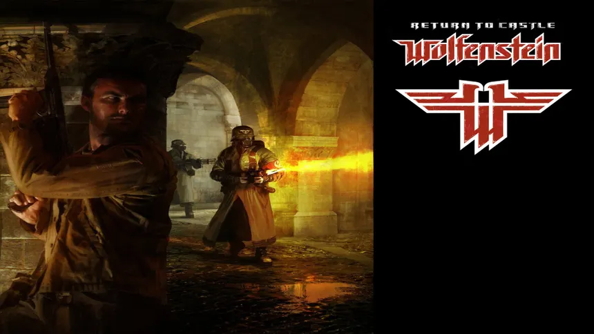
El primer juego de la saga, Castle Wolfenstein, fue lanzado en 1981 y es considerado uno de los pioneros del sigilo en videojuegos. En este título, el jugador debía infiltrarse en un castillo nazi, evitar soldados, robar documentos secretos y escapar con vida.
Aunque su tecnología era limitada, introdujo mecánicas innovadoras para la época, como el uso de disfraces, el sigilo y la exploración. No había una narrativa profunda, pero sí una premisa clara: infiltrarse en territorio enemigo y sobrevivir.
Este juego sentó las bases del concepto que definiría toda la saga: un solo hombre enfrentándose a un sistema enemigo dentro de sus propias instalaciones.
Wolfenstein 3D (1992)
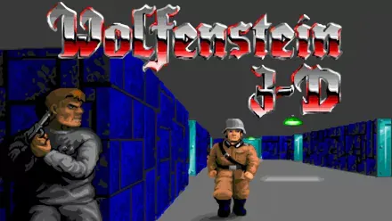
Wolfenstein 3D marcó un antes y un después en la historia de los videojuegos. Desarrollado por id Software, es considerado uno de los primeros shooters en primera persona de la historia.
Aquí aparece con fuerza el personaje de B.J. Blazkowicz como protagonista. El juego se centra en escapar de un castillo nazi y enfrentarse a todo tipo de enemigos, incluyendo soldados, oficiales y jefes finales.
La narrativa sigue siendo simple, pero introduce elementos que luego se volverían icónicos: combate intenso, armas variadas y niveles laberínticos. Además, el juego establece el tono exagerado y violento que caracterizaría a la saga.
Su impacto fue enorme, ya que sentó las bases del género FPS moderno.
Return to Castle Wolfenstein (2001)
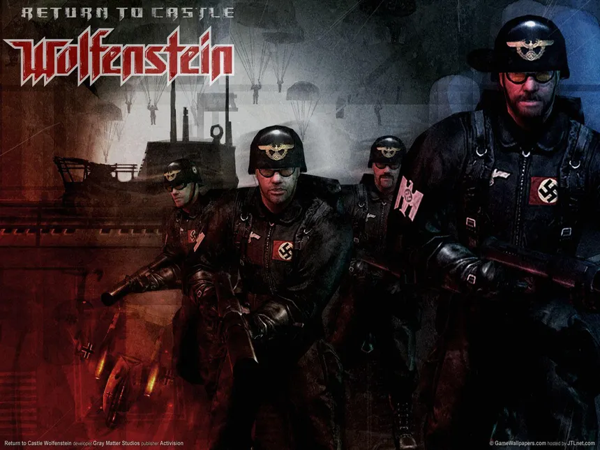
Return to Castle Wolfenstein representa una evolución importante dentro de la saga clásica. Aquí la historia toma un tono más oscuro y comienza a introducir elementos sobrenaturales, algo que luego retomaría la saga moderna en The Old Blood.
En este juego, B.J. Blazkowicz es capturado y llevado al Castillo Wolfenstein, donde descubre que los nazis están experimentando con fuerzas ocultas, creando criaturas y buscando poder más allá de la ciencia.
A medida que avanza la historia, el jugador enfrenta zombis, experimentos fallidos y enemigos cada vez más extraños, mezclando acción militar con horror sobrenatural.
Este título es clave porque conecta la idea de ciencia nazi con lo oculto, algo que influye directamente en el tono de entregas posteriores como The Old Blood.
Diferencias con la saga moderna
Aunque la saga clásica y la moderna comparten personajes y conceptos, existen diferencias importantes:
- La saga clásica tiene una narrativa más simple y centrada en la acción.
- La saga moderna desarrolla una historia profunda, emocional y continua.
- El tono clásico es más arcade, mientras que el moderno es más cinematográfico.
- La línea moderna funciona como un reinicio del universo.
Aun así, ambas etapas son fundamentales para entender el impacto de Wolfenstein dentro de la industria.
Importancia de la saga clásica
Los juegos clásicos de Wolfenstein no solo crearon una franquicia, sino que ayudaron a definir un género entero. Sin ellos, los shooters en primera persona no serían lo que son hoy.
Además, establecieron elementos clave como el protagonista solitario, la infiltración en bases enemigas y la lucha contra el régimen nazi, que siguen presentes en la saga moderna.
Por eso, aunque no formen parte directa de la cronología actual, siguen siendo una pieza esencial dentro del universo Wolfenstein.
Wolfenstein: The Old Blood – Historia Completa
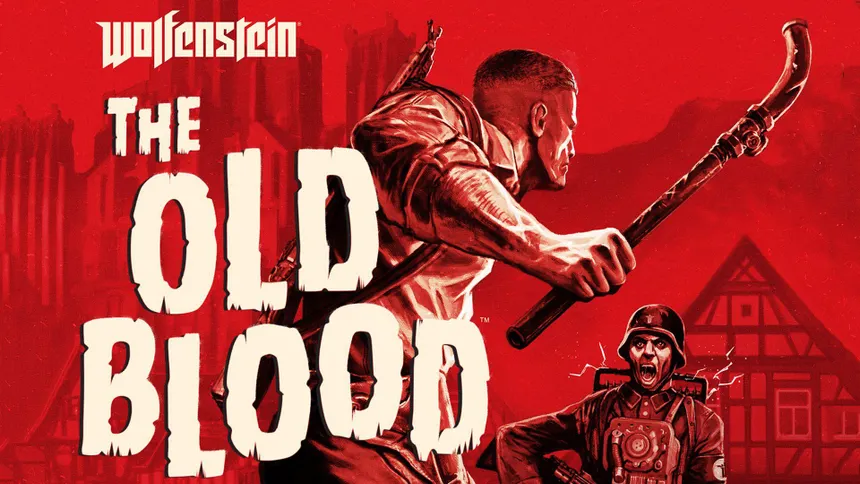
Wolfenstein: The Old Blood actúa como una precuela directa de The New Order, situándose en el año 1946, en una línea temporal alternativa donde el régimen nazi ha logrado avances tecnológicos muy superiores a los del mundo real. En este contexto, seguimos nuevamente a William “B.J.” Blazkowicz, un soldado endurecido por la guerra, cuya misión es infiltrarse en territorio enemigo para obtener información clave que podría cambiar el curso del conflicto.
La historia se divide en dos grandes partes: la infiltración en el Castillo Wolfenstein y los sucesos posteriores en el pueblo de Wulfburg, donde la narrativa toma un giro mucho más oscuro y sobrenatural.
Capítulo 1 – La misión en el Castillo Wolfenstein
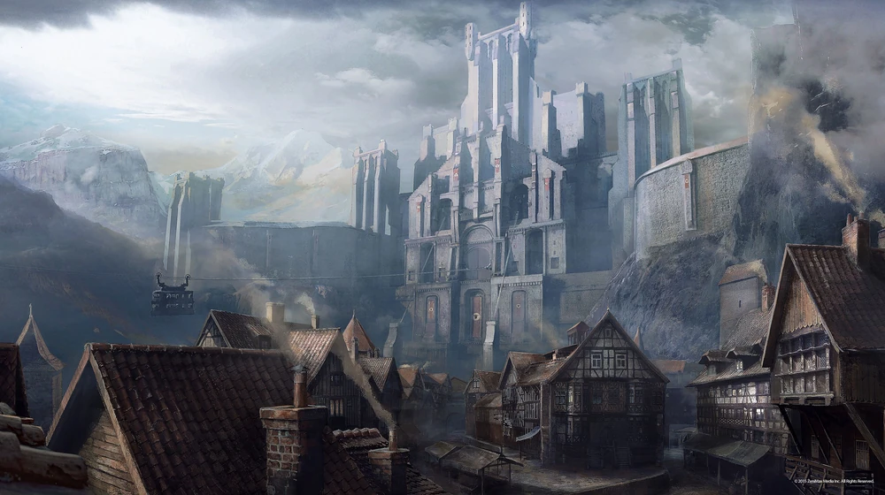
La historia comienza con B.J. Blazkowicz y su compañero Richard Wesley infiltrándose en el Castillo Wolfenstein, una fortaleza impenetrable controlada por el régimen nazi. Su objetivo es obtener una carpeta secreta que contiene la ubicación del General Wilhelm “Deathshead” Strasse, el científico responsable de las tecnologías que han dado ventaja al enemigo.
Para lograrlo, Blazkowicz se hace pasar por un oficial nazi utilizando documentos falsificados. Desde el inicio, el juego establece una atmósfera tensa, donde cualquier error puede significar la muerte. El castillo está lleno de soldados, oficiales y sistemas de seguridad, lo que obliga al jugador a moverse con cautela y precisión.
Sin embargo, el plan comienza a desmoronarse cuando su identidad es descubierta. A partir de ese momento, la infiltración se convierte en una lucha directa por sobrevivir. Blazkowicz es capturado y llevado a una prisión dentro del castillo, donde se encuentra con otros prisioneros y comienza a planear su escape.
Capítulo 2 – La prisión y el escape
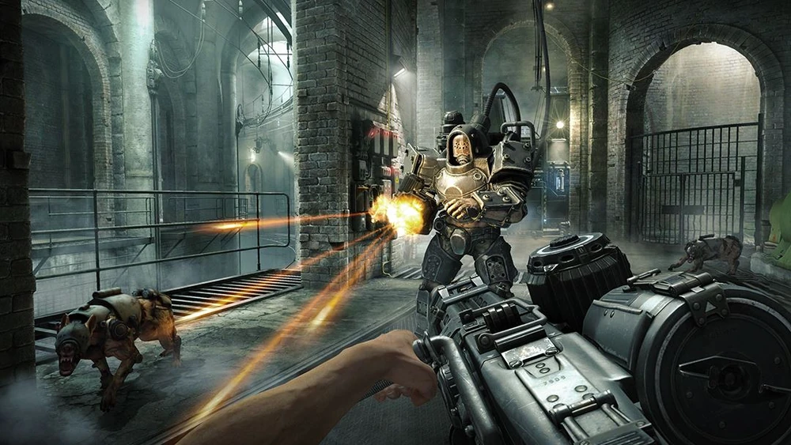
Dentro de la prisión, Blazkowicz conoce a otros detenidos y presencia de primera mano la brutalidad del régimen. Aquí el juego muestra uno de sus aspectos más crudos: la opresión, la tortura y la deshumanización.
Con ingenio y determinación, B.J. logra liberarse, utilizando herramientas improvisadas y aprovechando momentos de descuido. El escape no es sencillo: el castillo está en alerta máxima, y cada pasillo representa un peligro constante.
Durante esta sección, el jugador puede optar por un enfoque sigiloso o directo, reflejando la dualidad del personaje: un soldado capaz tanto de infiltrarse silenciosamente como de enfrentarse a ejércitos enteros.
Capítulo 3 – Enfrentamiento con Helga von Schabbs
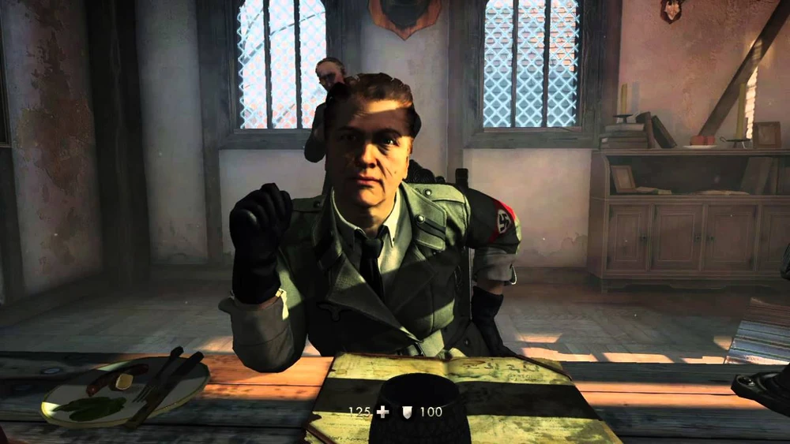
Uno de los personajes clave de esta historia es Helga von Schabbs, una arqueóloga obsesionada con lo oculto y lo sobrenatural. A diferencia de otros líderes nazis enfocados en la tecnología, Helga busca poder en fuerzas antiguas y desconocidas.
Blazkowicz se enfrenta a ella durante su escape del castillo. Aunque logra sobrevivir, Helga continúa con sus experimentos, lo que tendrá consecuencias devastadoras más adelante.
Este encuentro establece el cambio de tono del juego: de una historia militar a algo mucho más cercano al horror.
Capítulo 4 – Wulfburg y el horror desatado
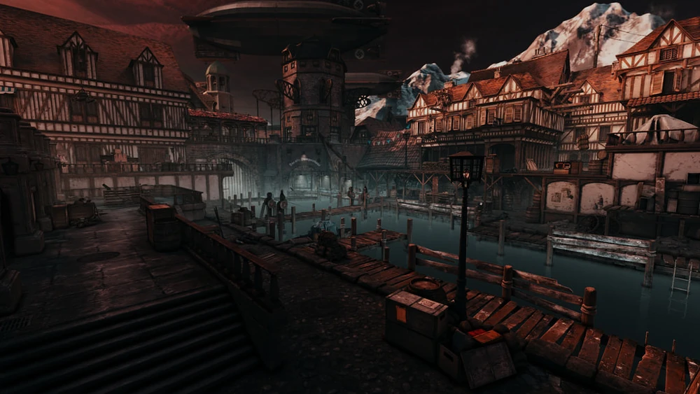
Tras escapar del castillo, Blazkowicz llega al pueblo de Wulfburg. Lo que parecía una simple continuación de la misión se transforma rápidamente en una pesadilla. Helga ha liberado una antigua fuerza que convierte a los muertos en criaturas violentas.
El pueblo queda sumido en el caos. Soldados nazis y civiles son transformados en monstruos, y el entorno cambia completamente: de un escenario de guerra a uno de horror sobrenatural.
Blazkowicz debe atravesar calles infestadas, enfrentando enemigos que no siguen las reglas habituales. Esta sección del juego mezcla acción intensa con tensión constante, creando una experiencia distinta a la primera mitad.
Capítulo 5 – El origen de la maldición
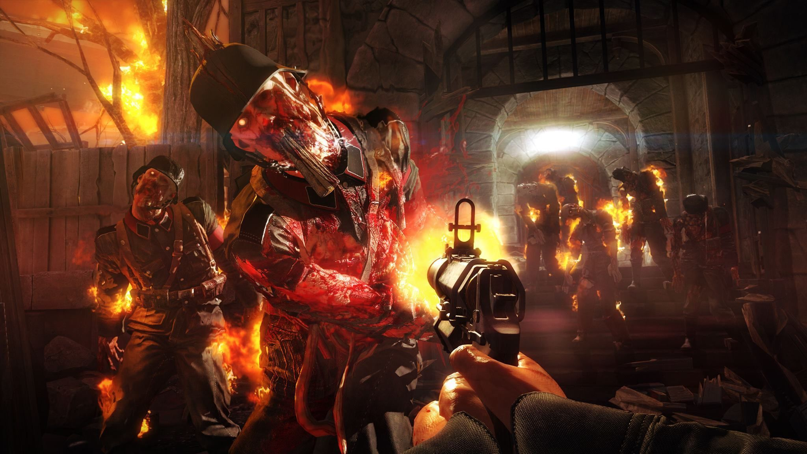
A medida que avanza, Blazkowicz descubre que Helga encontró un artefacto antiguo vinculado a una maldición ancestral. Este objeto es la fuente del caos que se ha desatado en Wulfburg.
La obsesión de Helga por el poder la llevó a ignorar las consecuencias, liberando fuerzas que ni siquiera el régimen nazi puede controlar. Este punto refuerza uno de los temas centrales del juego: la arrogancia humana frente a lo desconocido.
Capítulo 6 – Enfrentamiento final
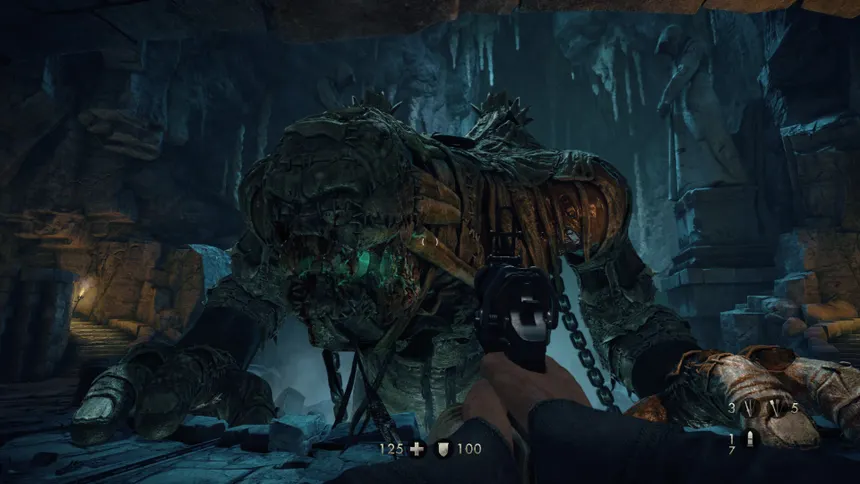
El clímax del juego ocurre cuando Blazkowicz enfrenta directamente a Helga y a las criaturas que ha desatado. La batalla final combina acción intensa con un tono oscuro y desesperado.
Finalmente, logra detener la amenaza, pero el daño ya está hecho. Wulfburg queda devastado, y la misión deja claro que el enemigo no solo es peligroso por su poder militar, sino también por su obsesión con fuerzas que no comprenden.
Conclusión – Un mundo al borde del colapso
The Old Blood sirve como puente hacia The New Order, mostrando cómo el régimen nazi no solo domina a través de la tecnología, sino también mediante la explotación de cualquier tipo de poder disponible, incluso el sobrenatural.
Blazkowicz emerge como una figura clave: un hombre dispuesto a enfrentarse a lo imposible, ya sea tecnología avanzada o terrores ancestrales. Su determinación y resistencia lo convierten en uno de los personajes más icónicos del género.
La historia deja una sensación clara: el mundo está perdiendo. Y lo que viene después será aún peor.
Wolfenstein: The New Order – Historia Completa
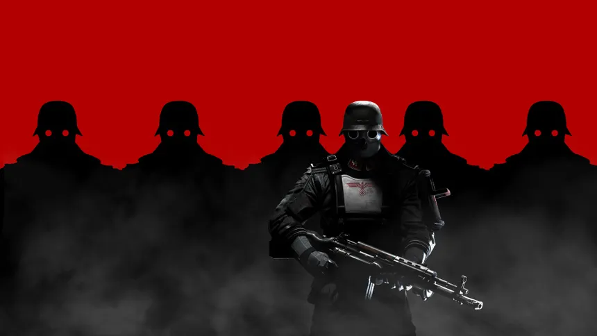
Wolfenstein: The New Order continúa la historia de William “B.J.” Blazkowicz en una línea temporal alternativa donde el régimen nazi ha ganado la Segunda Guerra Mundial gracias a su superioridad tecnológica. El juego mezcla ciencia ficción, opresión política y resistencia humana, mostrando un mundo completamente dominado por el enemigo.
La narrativa se estructura en dos grandes líneas temporales: el asalto inicial en 1946 y el futuro distópico en 1960, donde el mundo ya ha caído bajo el control nazi.
1946 – El asalto final contra Deathshead
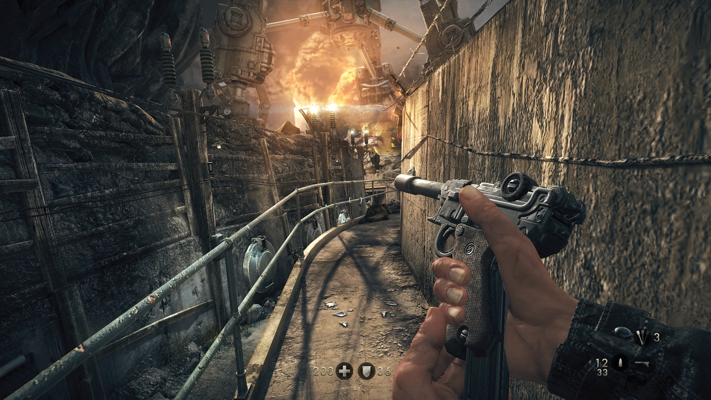
La historia comienza en 1946, durante el último intento desesperado de las fuerzas aliadas para derrotar al General Wilhelm “Deathshead” Strasse, el científico responsable de la tecnología avanzada nazi. Blazkowicz forma parte de un equipo de asalto que busca infiltrarse en su fortaleza.
El ataque es caótico y brutal. A pesar de los esfuerzos, queda claro que el enemigo tiene una ventaja abrumadora: robots, armas futuristas y una organización militar casi imparable.
Durante la misión, Blazkowicz es capturado junto a su compañero Fergus Reid. Deathshead los obliga a tomar una decisión imposible: elegir quién de los dos será ejecutado. Este momento es clave porque marca el inicio de dos líneas narrativas posibles dentro del juego.
Tras este evento, Blazkowicz resulta gravemente herido y cae en estado vegetativo, quedando fuera de combate durante años.
1960 – Un mundo dominado por el régimen
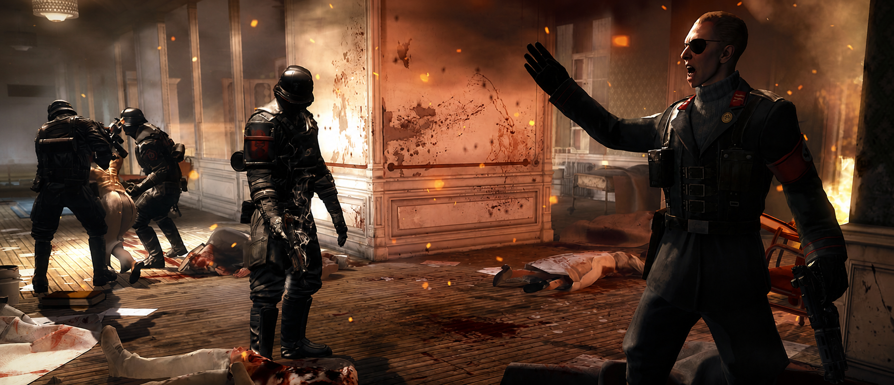
Blazkowicz despierta en 1960 en un hospital psiquiátrico en Polonia. El mundo que encuentra es completamente distinto: el régimen nazi ha conquistado el planeta, imponiendo un control absoluto sobre la sociedad.
Las ciudades están vigiladas constantemente, la tecnología ha avanzado de forma extrema y cualquier forma de resistencia ha sido prácticamente eliminada. La atmósfera es opresiva y desesperanzadora.
El hospital es atacado por soldados nazis, y Blazkowicz, aún debilitado, logra escapar junto a Anya Oliwa, quien se convierte en una de sus principales aliadas.
La resistencia y nuevos aliados

Tras escapar, Blazkowicz se une a un grupo de resistencia liderado por Caroline Becker. Este grupo representa la última esperanza contra el dominio nazi.
Aquí conocemos a varios personajes importantes: Set Roth, un científico excéntrico que ayuda a comprender la tecnología enemiga; y otros miembros que aportan distintas perspectivas sobre la lucha contra el régimen.
La resistencia no es solo un grupo militar: es un símbolo de que aún existe humanidad en un mundo dominado por la opresión.
Misiones clave y sabotaje
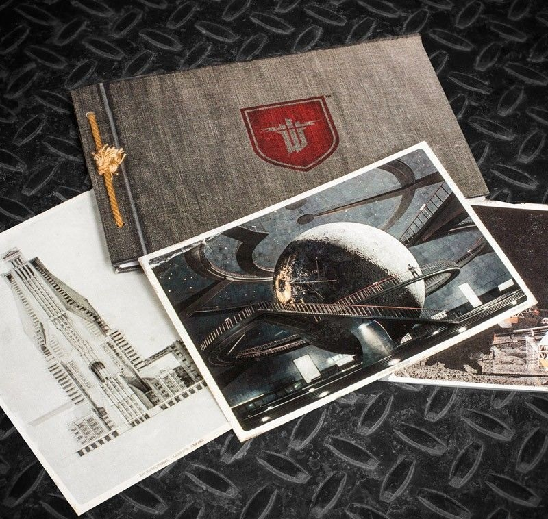
A lo largo del juego, Blazkowicz participa en múltiples misiones destinadas a debilitar el control nazi. Estas incluyen infiltraciones en bases, sabotaje de instalaciones y recuperación de información clave.
Cada misión refuerza la idea de que, aunque el enemigo parece invencible, pequeñas acciones pueden generar un impacto significativo.
El juego combina acción intensa con momentos más reflexivos, donde Blazkowicz cuestiona el estado del mundo y su propio papel en él.
La Luna y la expansión del poder nazi
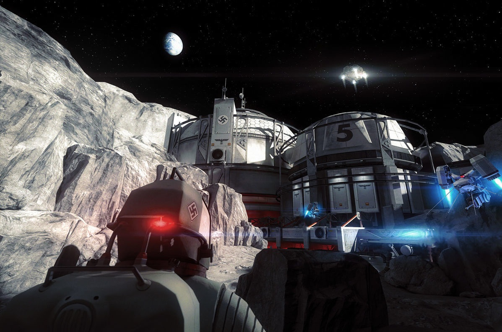
Uno de los momentos más impactantes del juego ocurre cuando Blazkowicz viaja a la Luna, donde los nazis han establecido una base avanzada. Este escenario muestra hasta qué punto ha llegado su dominio tecnológico.
La misión en la Luna simboliza el alcance global —e incluso fuera del planeta— del poder nazi, reforzando la sensación de que la resistencia enfrenta una fuerza casi imparable.
Regreso a Deathshead
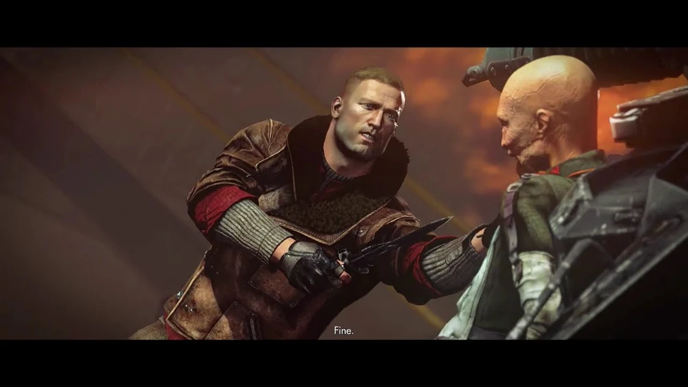
El clímax del juego lleva nuevamente a Blazkowicz a enfrentarse con Deathshead. Esta vez, el objetivo es claro: eliminar la fuente principal del poder tecnológico nazi.
La batalla final es intensa y cargada de simbolismo. Deathshead representa no solo al enemigo, sino también la culminación de todo lo que ha salido mal en este mundo.
Finalmente, Blazkowicz logra derrotarlo, pero a un alto costo. El enfrentamiento deja claro que, aunque se ha logrado un golpe importante, la guerra está lejos de terminar.
Conclusión – La chispa de la resistencia
The New Order no es solo una historia de guerra, sino de resistencia y humanidad. En un mundo donde todo parece perdido, Blazkowicz y sus aliados demuestran que siempre existe la posibilidad de luchar.
El juego establece las bases para los eventos futuros, mostrando que la caída del régimen no será rápida ni sencilla. Sin embargo, también deja claro que el espíritu humano no puede ser completamente eliminado.
La historia termina con una sensación de esperanza contenida: la resistencia sigue viva, y la lucha continúa.
Wolfenstein II: The New Colossus – Historia Completa
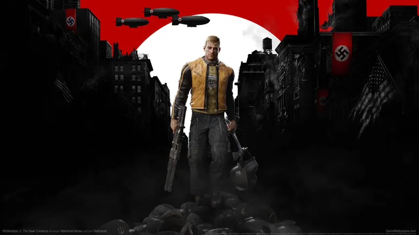
Wolfenstein II: The New Colossus continúa directamente los eventos de The New Order. Tras la derrota de Deathshead, el régimen nazi sigue dominando el mundo, y ahora ha consolidado su poder especialmente en Estados Unidos, transformándolo en una nación ocupada.
La historia profundiza mucho más en el personaje de William “B.J.” Blazkowicz, mostrando no solo al soldado, sino también al hombre, su pasado, sus traumas y su lucha interna.
El estado de Blazkowicz
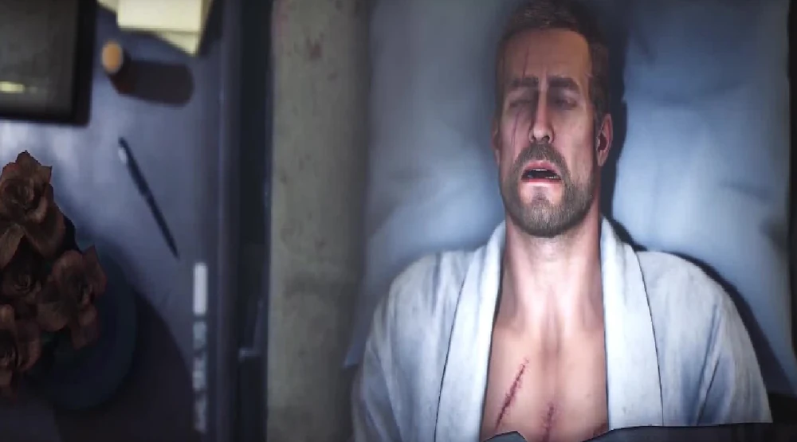
El juego comienza inmediatamente después de los eventos anteriores. Blazkowicz está gravemente herido tras su enfrentamiento con Deathshead y se encuentra al borde de la muerte. A pesar de esto, sigue decidido a luchar.
Durante las primeras misiones, su estado físico es extremadamente débil, lo que se refleja en la jugabilidad y en la narrativa. Esto añade una capa de realismo y tensión: el protagonista ya no es invencible.
La ocupación de Estados Unidos
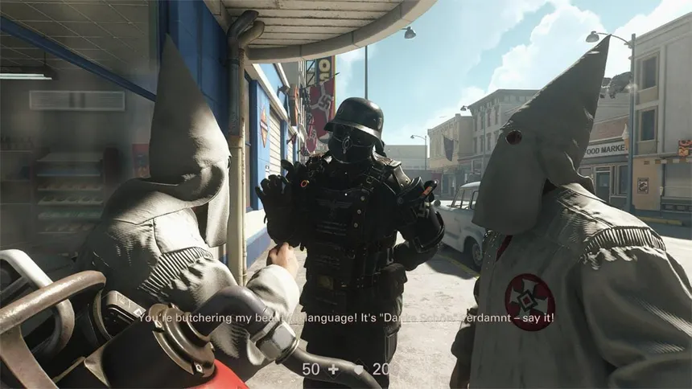
Uno de los aspectos más impactantes del juego es la representación de Estados Unidos bajo control nazi. Ciudades enteras han sido transformadas, la cultura ha sido reemplazada y la población vive bajo vigilancia constante.
Este contexto le da al juego un tono mucho más personal: ya no se trata solo de una guerra global, sino de recuperar el propio hogar.
El pasado de Blazkowicz
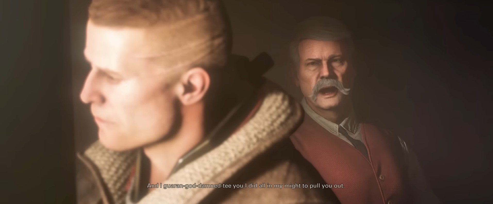
A lo largo de la historia, se explora el pasado de B.J., mostrando su infancia y la relación con su padre. Estos recuerdos revelan el origen de su carácter, su resistencia y su odio hacia la opresión.
Estas escenas son clave porque humanizan al personaje, mostrando que su lucha no es solo contra un enemigo externo, sino también contra sus propios demonios.
La resistencia americana
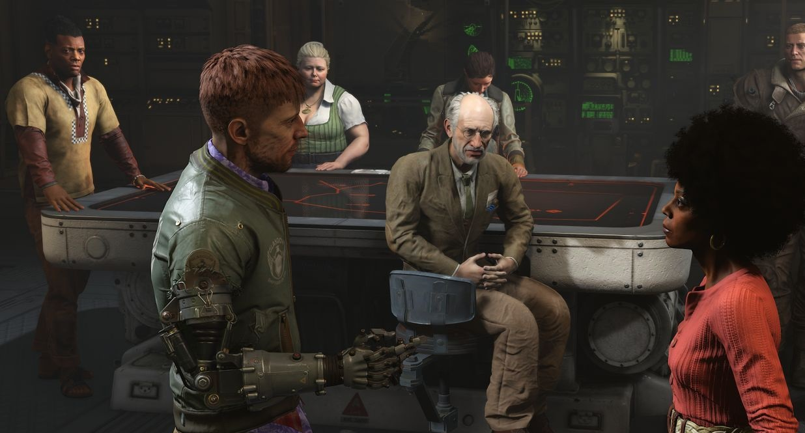
Blazkowicz se une a diferentes grupos de resistencia en Estados Unidos. A diferencia del juego anterior, aquí la lucha se siente más caótica, con múltiples facciones y líderes.
El objetivo es unir a estos grupos para formar una fuerza capaz de enfrentar al régimen. Este proceso no es sencillo, ya que cada grupo tiene sus propios intereses y formas de actuar.
Frau Engel – La principal antagonista
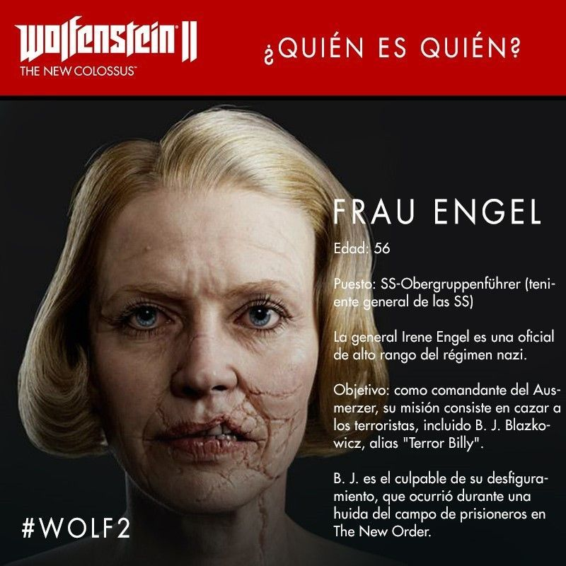
La principal antagonista de esta entrega es Frau Engel, una figura cruel y despiadada que representa la brutalidad del régimen. A diferencia de Deathshead, su poder no proviene tanto de la ciencia, sino de su sadismo y control.
Su presencia es constante a lo largo del juego, generando tensión y anticipación hacia el enfrentamiento final.
Renacimiento de Blazkowicz
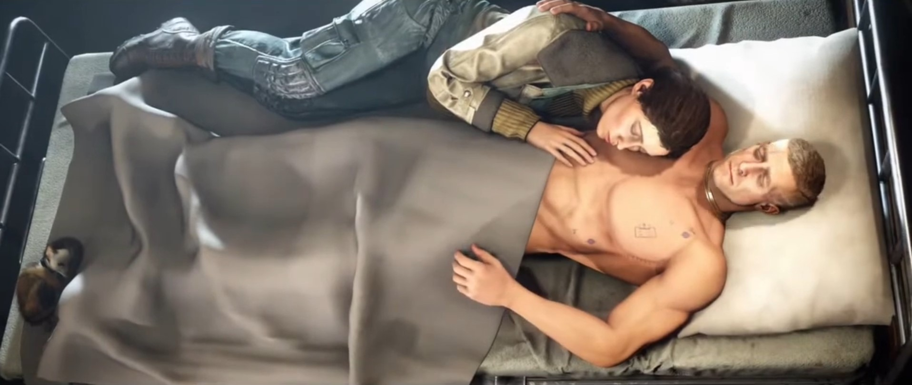
Uno de los momentos más impactantes ocurre cuando Blazkowicz recibe un nuevo cuerpo gracias a tecnología avanzada. Este evento marca un renacimiento simbólico del personaje.
A partir de este punto, deja de ser un hombre al borde de la muerte y se convierte en una fuerza imparable, listo para liderar la revolución.
La revolución
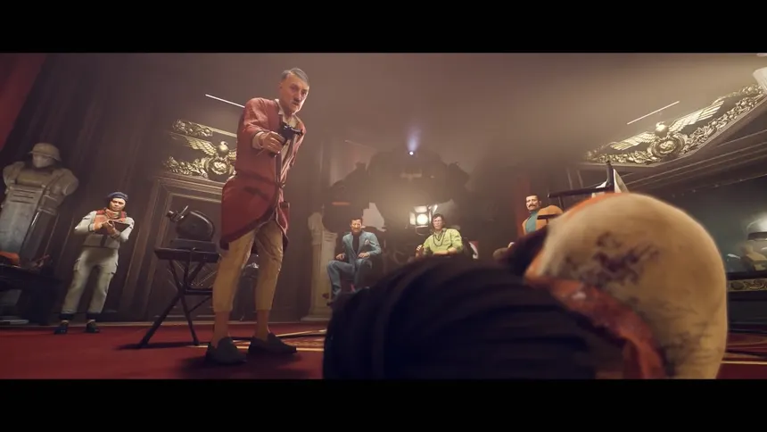
Con la resistencia unida, Blazkowicz lidera una revolución contra el régimen nazi en Estados Unidos. Este es el punto donde la narrativa cambia: ya no se trata solo de sobrevivir, sino de recuperar el control.
Las misiones finales muestran enfrentamientos a gran escala y momentos de gran intensidad, donde cada acción tiene consecuencias.
Enfrentamiento final con Frau Engel

El clímax del juego llega con el enfrentamiento contra Frau Engel. Este momento no solo es una batalla física, sino también simbólica: representa la lucha contra todo lo que el régimen ha impuesto.
Blazkowicz finalmente logra derrotarla, marcando un punto de inflexión en la historia.
Conclusión – El inicio del cambio
The New Colossus cierra con una sensación de esperanza más fuerte que en entregas anteriores. La resistencia ya no es solo una chispa: se ha convertido en una fuerza real.
Aunque el régimen nazi sigue siendo poderoso, el mundo ha comenzado a cambiar. Blazkowicz ya no lucha solo por sobrevivir, sino por reconstruir un futuro.
La historia deja claro que la guerra aún no ha terminado, pero por primera vez, la victoria parece posible.
Wolfenstein II: The New Colossus – DLCs / The Freedom Chronicles
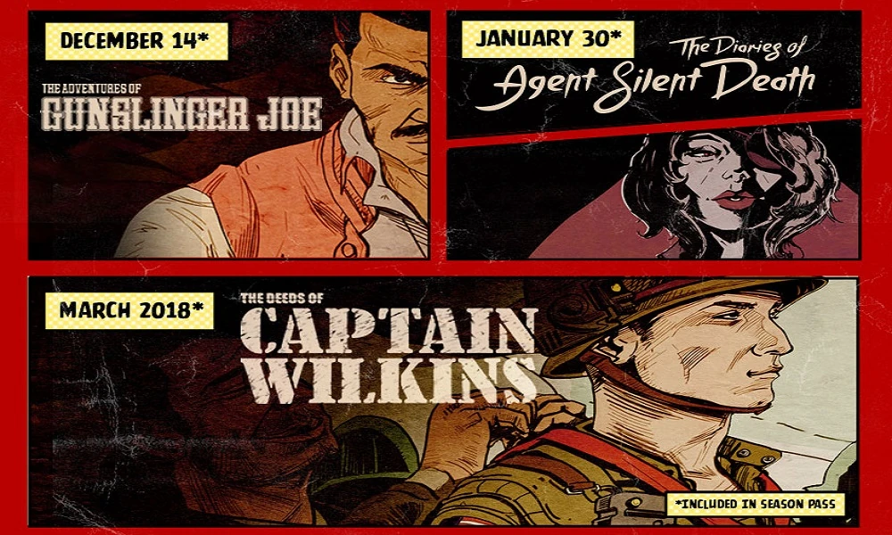
The Freedom Chronicles es el contenido descargable de Wolfenstein II: The New Colossus. Esta serie de historias expande el universo del juego principal con tres episodios protagonizados por personajes distintos, cada uno llevando la guerra contra los nazis a escenarios nuevos, más violentos y más personales. Además, el pase de temporada incluye Episode Zero, una introducción que sirve como prólogo a este contenido adicional.
Estos DLCs no solo agregan más acción, sino que también muestran que la resistencia no depende de una sola persona. Hay más héroes, más frentes de lucha y más formas de desafiar al régimen.
Episode Zero
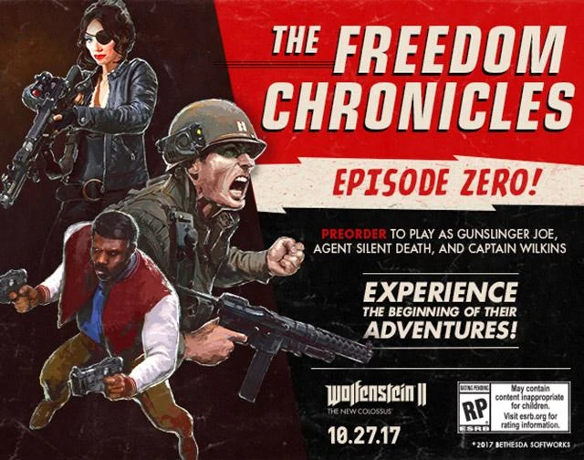
Episode Zero funciona como una introducción al pase de temporada. Presenta el tono de The Freedom Chronicles y prepara el terreno para las tres historias principales que siguen.
Aunque es más breve que los demás episodios, cumple una función importante: mostrar que el conflicto no terminó con la campaña principal de The New Colossus. La resistencia sigue viva, y nuevos combatientes están listos para tomar el relevo.
The Adventures of Gunslinger Joe
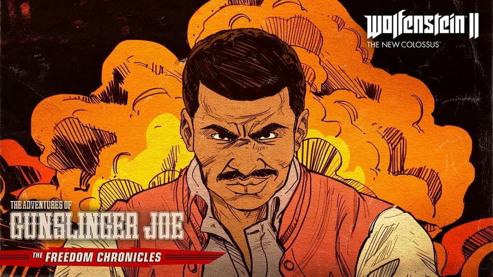
Este primer episodio de la serie sigue a Joseph Stallion, conocido como Gunslinger Joe, un ex jugador de fútbol americano convertido en combatiente contra el régimen nazi. Su historia mezcla violencia exagerada, humor negro y una sensación constante de caos.
Joe representa una forma distinta de resistencia: menos táctica y más brutal. En vez de depender del sigilo o de la tecnología, su estilo es directo, físico y contundente. Eso le da al DLC una identidad muy marcada dentro de la saga.
La historia lo lleva a recorrer zonas ocupadas por los nazis mientras lucha por sobrevivir y destruir todo lo que encuentra a su paso. Es un episodio corto, pero muy agresivo y muy fiel al tono exagerado de Wolfenstein.
The Diaries of Agent Silent Death
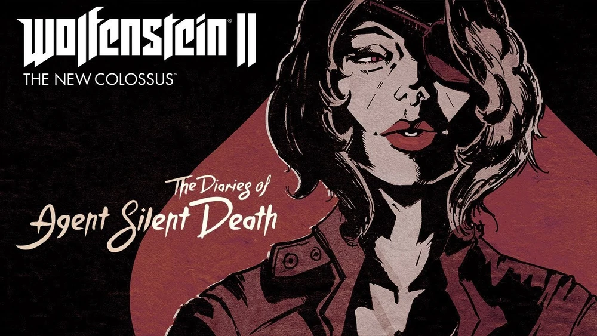
El segundo episodio pone el foco en Jessica Valiant, conocida como Agent Silent Death. Su historia ocurre en California, dentro de las oficinas de Paragon Pictures, un estudio de cine convertido en centro de propaganda nazi.
Este DLC tiene un tono más de infiltración y espionaje. Jessica funciona como una asesina silenciosa que debe moverse entre sombras, descubrir una conspiración y eliminar objetivos con precisión. Su enfoque lo hace distinto al de Gunslinger Joe, porque prioriza el sigilo y la tensión.
Narrativamente, este episodio amplía la idea de resistencia desde otra perspectiva: no todos los héroes pelean a gritos y explosiones; algunos lo hacen desde el silencio, la paciencia y la ejecución perfecta.
The Deeds of Captain Wilkins
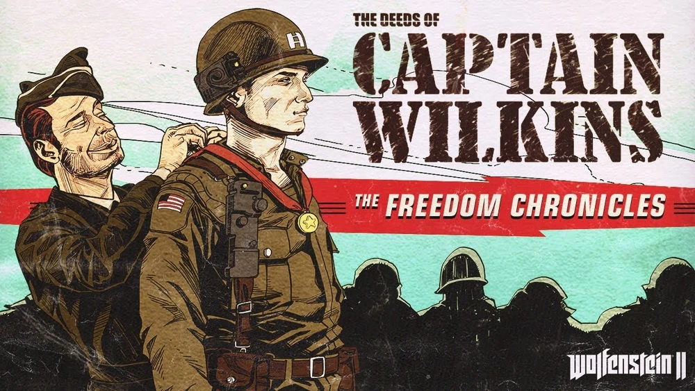
El tercer episodio sigue al capitán Gerald Wilkins, un soldado con una misión peligrosa que lo lleva a enfrentarse directamente con una base nazi fortificada. Su historia tiene un tono más militar, más serio y más centrado en operaciones de combate.
Wilkins representa al soldado clásico que todavía cree en la disciplina, la misión y el sacrificio. Su DLC añade una mirada distinta al conflicto, mostrando que la lucha contra el régimen puede venir también desde estructuras más ordenadas y tácticas.
Es una historia que cierra la trilogía con un tono de guerra abierta, consolidando la idea de que The Freedom Chronicles no es un solo relato, sino una colección de frentes de batalla donde distintos héroes enfrentan la misma pesadilla.
Conclusión de los DLCs
Los DLCs de Wolfenstein II: The New Colossus amplían el universo de la saga al mostrar que la resistencia no depende solo de B.J. Blazkowicz. Cada episodio presenta un protagonista distinto, un estilo de juego diferente y una visión particular de la lucha contra los nazis.
The Freedom Chronicles funciona como una expansión del mundo y del espíritu de la saga: acción exagerada, violencia brutal, resistencia desesperada y personajes que se niegan a rendirse incluso cuando todo parece perdido.
Wolfenstein: Youngblood – Historia Completa

Wolfenstein: Youngblood es una entrega distinta dentro de la saga, porque deja a un lado a B.J. Blazkowicz como protagonista principal y pone el foco en sus hijas gemelas, Jess y Soph Blazkowicz. La historia ocurre años después de The New Colossus, en un mundo donde el régimen nazi sigue dominando gran parte del planeta, pero la resistencia todavía no ha desaparecido.
Esta vez, la narrativa cambia de tono: sigue habiendo violencia, acción y brutalidad, pero también aparece una dinámica más juvenil, más caótica y más centrada en el legado de Blazkowicz. Las hermanas no son soldados idénticos a su padre, sino dos personajes con personalidades distintas que deben aprender a trabajar juntas para sobrevivir y atacar al enemigo.
Capítulo 1 – La desaparición de B.J.
La historia comienza con la desaparición de B.J. Blazkowicz. Aunque sigue siendo una figura central dentro del universo, ya no ocupa el rol de protagonista activo como en los juegos anteriores. Sus hijas crecen en un mundo donde su padre es una leyenda, una figura casi mítica dentro de la resistencia contra los nazis.
La ausencia de B.J. no solo funciona como un punto de partida narrativo, sino también como una forma de mostrar el paso del tiempo. El héroe de guerra ya no es el único capaz de liderar la pelea. Ahora sus hijas tienen que tomar la posta y demostrar que el legado puede continuar de otra manera.
Capítulo 2 – Jess y Soph Blazkowicz
Jess y Soph son el corazón de Youngblood. Aunque comparten el mismo origen, sus personalidades son diferentes, lo que hace que la historia tenga un tono más dinámico y más personal. Su relación está construida sobre la cooperación, pero también sobre pequeñas tensiones y diferencias de carácter.
A diferencia de B.J., que carga con el peso de la guerra y del trauma, ellas representan una nueva generación que creció rodeada por la resistencia y la violencia, pero que aún conserva una energía distinta. Esa diferencia hace que el juego tenga una identidad propia dentro de la saga.
Narrativamente, las gemelas muestran que el legado de la resistencia no terminó con una sola persona. La lucha se hereda, pero también se transforma.
Capítulo 3 – El París ocupado
La aventura se desarrolla en un París ocupado por los nazis, una ciudad que sirve como símbolo del control absoluto del régimen sobre el mundo. A través de sus calles, túneles, edificios y zonas fortificadas, el juego muestra una nueva cara del dominio enemigo.
París no es solo un escenario: es una representación del corazón cultural secuestrado por la propaganda, la vigilancia y la maquinaria del poder nazi. Las gemelas deben moverse por la ciudad para encontrar pistas sobre el paradero de su padre y debilitar la estructura enemiga.
Este entorno hace que la historia se sienta más urbana, más abierta y más orientada a la exploración, aunque siga manteniendo la acción violenta característica de la saga.
Capítulo 4 – La búsqueda de B.J.
El objetivo principal de las hermanas es encontrar a B.J. Mientras investigan, descubren información sobre la red nazi, sus instalaciones y sus planes. La búsqueda de su padre se convierte en un viaje de crecimiento personal, porque ya no se trata solo de rescatar a alguien, sino de entender qué significa continuar su lucha.
A medida que avanzan, las hermanas tienen que actuar por su cuenta. Eso las obliga a tomar decisiones, a coordinarse y a asumir responsabilidades que antes estaban más asociadas con un soldado experimentado como B.J.
Narrativamente, esta estructura sirve para mostrar que el protagonismo de la saga se está transfiriendo a una nueva generación.
Capítulo 5 – Nuevos aliados y la resistencia
Durante su búsqueda, Jess y Soph se cruzan con distintos miembros de la resistencia francesa y otros aliados que les ayudan a entender mejor la ciudad y el enemigo al que enfrentan. Esta parte amplía la sensación de mundo abierto y de conflicto distribuido por toda la ciudad.
La resistencia ya no se siente como un pequeño grupo desesperado, sino como una red fragmentada que sigue peleando en diferentes frentes. Las gemelas pasan a formar parte de ese esfuerzo, convirtiéndose en nuevas piezas de una guerra que lleva demasiado tiempo activa.
Capítulo 6 – La tecnología nazi y el poder de los Ausmerzer
Uno de los elementos más llamativos de Youngblood es la presencia de la tecnología nazi avanzada, especialmente los grandes sistemas de control que dominan la ciudad y protegen la estructura del régimen. Estas máquinas refuerzan la sensación de que el enemigo sigue siendo enorme, organizado y difícil de destruir.
Las gemelas deben abrirse paso entre vigilancia, fortificaciones y enemigos de alto nivel para seguir avanzando. La ciudad entera parece construida para aplastar cualquier intento de rebelión.
Capítulo 7 – El legado de Blazkowicz
Más allá de la búsqueda de B.J., la historia gira alrededor del legado. Las hermanas entienden que no están allí solo como hijas de un héroe, sino como parte de una continuidad histórica de lucha contra la opresión.
Este tema es muy importante porque cambia el enfoque de la saga: ya no se trata únicamente de la figura del soldado solitario, sino de una familia que hereda el conflicto y lo transforma en una nueva forma de resistencia.
Jess y Soph no intentan copiar a su padre. Su historia consiste en aprender a ser distintas, pero igual de valientes.
Capítulo 8 – El enfrentamiento con el régimen
A medida que la historia avanza, las hermanas se acercan al corazón del control nazi en París. El enfrentamiento final concentra todo lo que el juego construyó: cooperación, acción, búsqueda de identidad y la idea de que el pasado no se hereda para repetirlo, sino para superarlo.
La batalla final mantiene el tono exagerado y violento de la saga, pero con una identidad más ligera y juvenil que las entregas anteriores. El resultado es una historia que se siente como el paso de la antorcha a una nueva generación.
Conclusión – Una nueva generación de resistencia
Wolfenstein: Youngblood cierra el ciclo principal de esta etapa mostrando que la lucha contra el régimen nazi no depende de una sola persona. B.J. Blazkowicz sigue siendo una figura esencial, pero ahora el peso del futuro cae sobre Jess y Soph.
La historia deja claro que el legado de la resistencia no termina con una victoria puntual. Mientras exista opresión, siempre habrá alguien dispuesto a pelear. Y en esta nueva etapa, esas personas son las hijas de B.J.
Con esto, la saga sigue expandiéndose hacia una nueva generación de héroes, manteniendo viva la guerra contra el régimen y dejando abierta la posibilidad de más historias en el mismo universo.
Personajes de Wolfenstein
A continuación se presentan los personajes más importantes de la saga Wolfenstein, incluyendo The Old Blood, The New Order, The New Colossus, The Freedom Chronicles y Youngblood. Cada uno cumple un papel importante en la historia, ya sea como aliado, enemigo, símbolo de la resistencia o representación del régimen nazi y su caída.
B.J. Blazkowicz
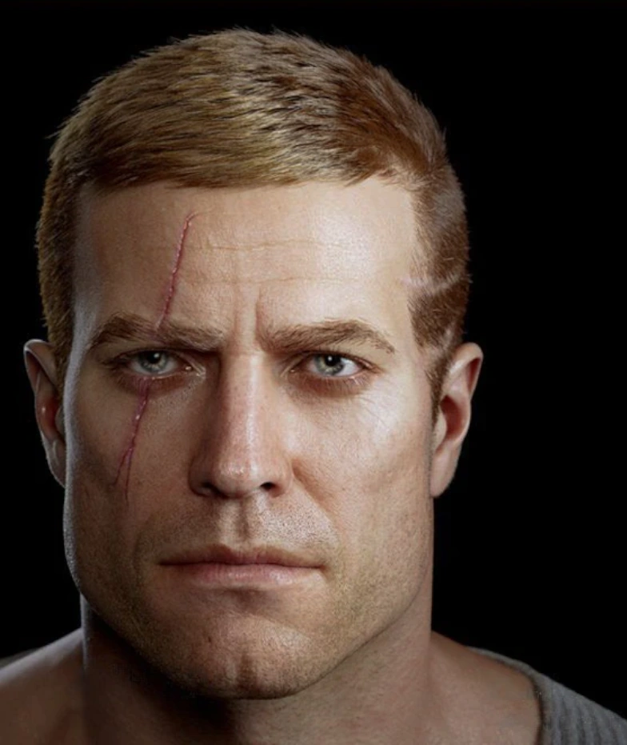
William Joseph “B.J.” Blazkowicz es el protagonista absoluto de la saga. Soldado, infiltrado y símbolo de la resistencia, B.J. es el tipo de personaje que carga con el peso físico y emocional de una guerra que parece no terminar nunca. Desde The Old Blood hasta Youngblood, su evolución lo convierte en mucho más que un héroe de acción: es un hombre roto por la guerra, pero incapaz de rendirse.
En The Old Blood, B.J. aparece como un agente encubierto decidido a obtener información valiosa dentro del Castillo Wolfenstein. Allí se muestra su lado más táctico, silencioso y preciso. En The New Order lo vemos convertido en una pieza clave de la resistencia, enfrentándose a un mundo donde el nazismo ha ganado la guerra. Tras quedar gravemente herido, en The New Colossus su papel se vuelve todavía más humano: no solo lucha, sino que también recuerda, siente, ama y transmite el legado de la resistencia.
B.J. es importante porque representa la idea de que un solo hombre puede convertirse en un punto de quiebre frente a un sistema monstruoso. No es invencible, no es perfecto y no siempre tiene respuestas, pero sigue avanzando. Su importancia narrativa está en que une todo el universo de Wolfenstein y le da a la saga un corazón emocional real.
Anya Oliwa
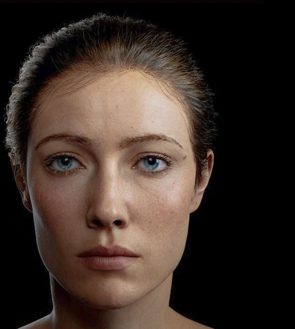
Anya Oliwa es uno de los personajes más importantes de la etapa moderna de la saga. Conoce a B.J. durante The New Order, cuando lo ayuda a escapar y comienza una relación que termina convirtiéndose en una de las más humanas y significativas del universo Wolfenstein.
Anya no es solo una aliada romántica. Es una mujer fuerte, inteligente y con una enorme capacidad para sobrevivir en un mundo dominado por el miedo. Su relación con B.J. aporta una dimensión emocional que contrasta con la brutalidad constante de la historia. Mientras todo alrededor parece destrucción, Anya representa hogar, cuidado, esperanza y continuidad.
En The New Colossus, su presencia se vuelve todavía más importante porque conecta directamente con el futuro de B.J. y con la idea de familia. Su papel es clave para entender que la lucha de Blazkowicz no es solo militar, sino también personal. Anya es el ancla emocional del protagonista y una pieza central del tono de la saga.
Frau Engel
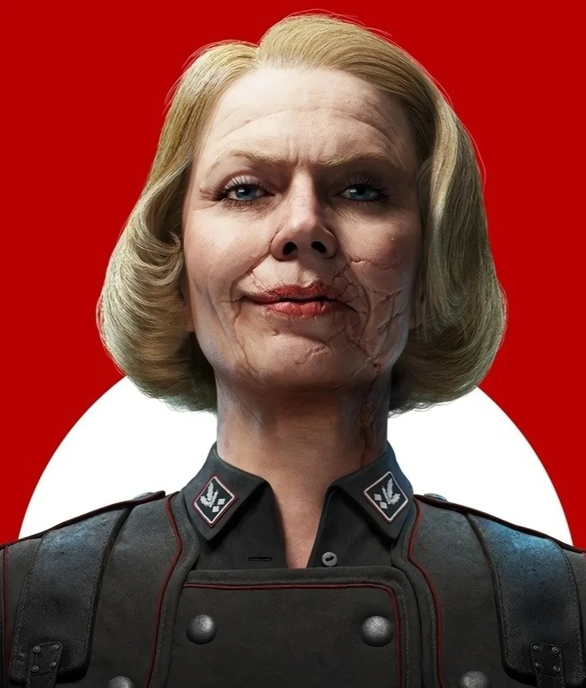
Frau Engel es una de las villanas más despiadadas de toda la saga. Aparece como una figura de autoridad nazi cruel, sádica y completamente comprometida con la ideología del régimen. Su carácter la convierte en una antagonista distinta de Deathshead: mientras él representa la ciencia y la experimentación, Engel representa la violencia directa, el fanatismo y el abuso de poder.
En The New Colossus se convierte en una enemiga central, responsable de gran parte del sufrimiento y la opresión que B.J. y la resistencia enfrentan. Su presencia domina muchas escenas porque no solo amenaza físicamente, sino también emocionalmente, generando tensión en cada aparición.
Narrativamente, Frau Engel representa el rostro más humano y más aterrador del régimen. No necesita una excusa compleja para ser peligrosa: su odio y su obediencia ciega bastan. Es uno de los grandes símbolos de la brutalidad nazi dentro del universo de Wolfenstein.
General Wilhelm “Deathshead” Strasse
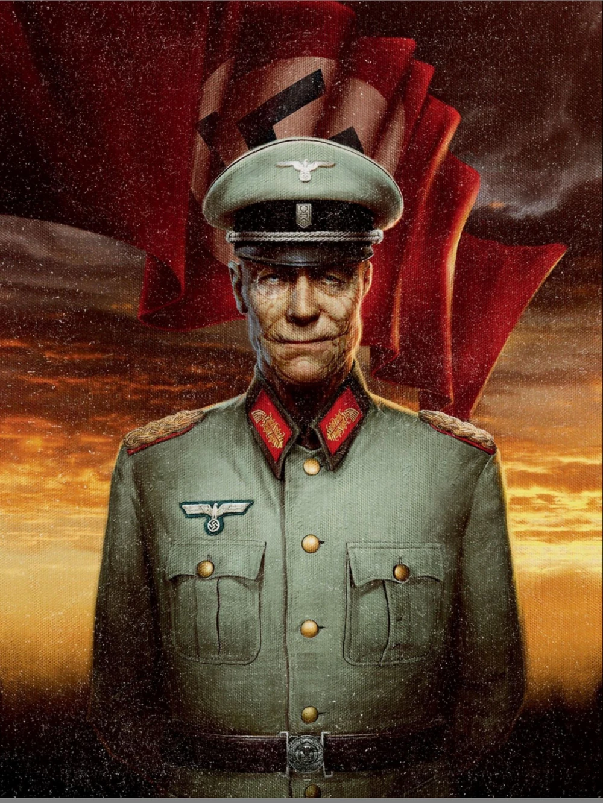
Deathshead es el gran antagonista tecnológico de The New Order y una de las figuras más importantes de toda la saga. Científico, estratega y monstruo moral, es el responsable de muchos de los avances tecnológicos que permitieron al régimen nazi dominar el mundo.
Su importancia no está solo en ser el villano final de una entrega, sino en representar la deshumanización total llevada al extremo. Deathshead convierte la guerra en un laboratorio y a las personas en material descartable para sus experimentos. Su crueldad no tiene límite porque está unida a una idea de progreso completamente desprovista de empatía.
Su enfrentamiento con B.J. cierra uno de los arcos más importantes de la saga, pero su legado queda presente en todo el mundo posterior. Deathshead es el origen de gran parte del horror que Blazkowicz debe enfrentar.
Caroline Becker
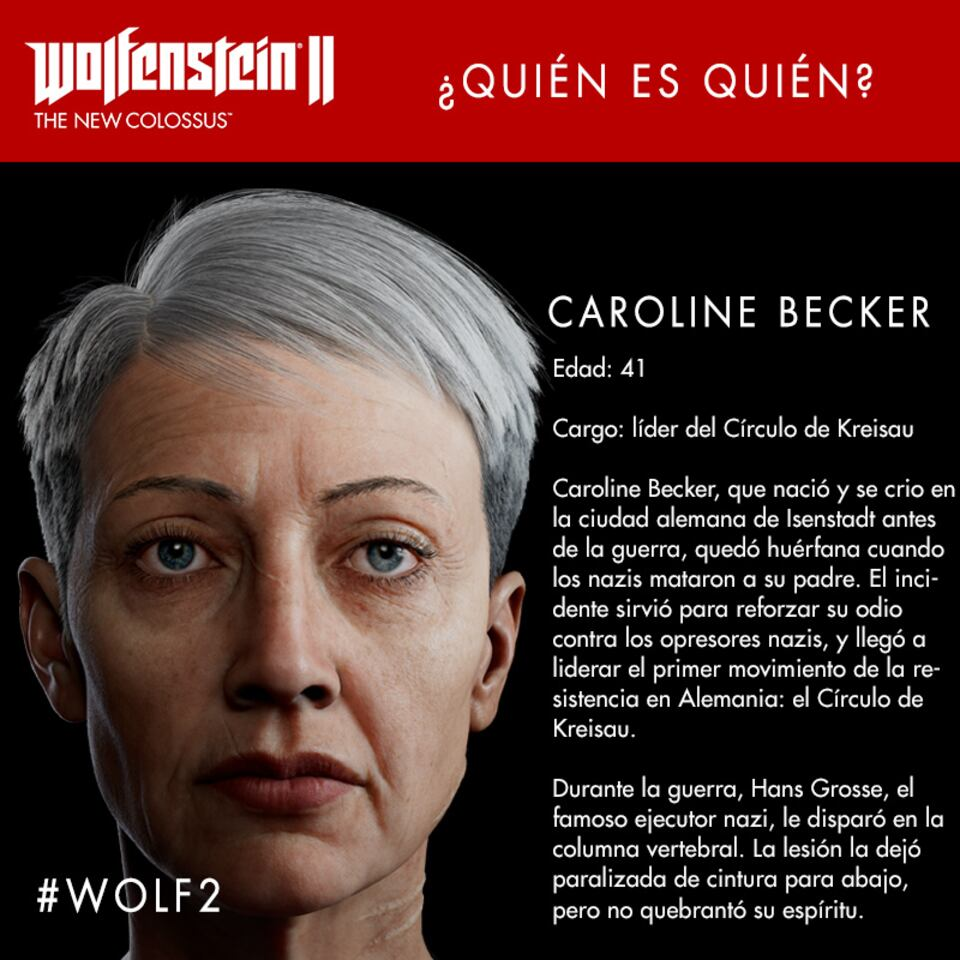
Caroline Becker es una figura fundamental de la resistencia. En The New Order actúa como líder estratégica y una de las pocas personas que ve el valor real de B.J. dentro de la lucha contra el régimen nazi. Su presencia aporta disciplina, organización y visión.
Caroline representa el liderazgo que no necesita ser carismático de forma superficial para ser fuerte. Es firme, valiente y consciente del sacrificio que implica resistir. Su importancia narrativa aumenta porque no solo es una combatiente, sino también una administradora de esperanza en un mundo desesperado.
Su destino en la saga la convierte en un símbolo de los costos de la guerra. Aun así, su legado continúa dentro de la resistencia y en las personas que ayudó a formar.
Set Roth
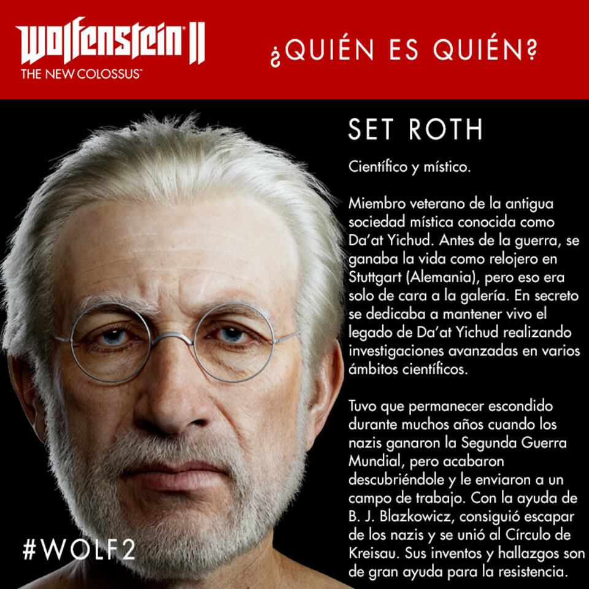
Set Roth es uno de los personajes más fascinantes de la saga. Científico judío, excéntrico, brillante y profundamente traumatizado, Set aporta una mezcla única de humor, tragedia e inteligencia al universo Wolfenstein. Su relación con B.J. y con la resistencia ayuda a explicar el lado más científico y experimental de la lucha contra el régimen.
En The New Order y The New Colossus, Set funciona como una mente que entiende la tecnología nazi desde adentro, pero que también carga con el dolor de haber visto hasta dónde puede llegar la crueldad humana. Su historia está marcada por la pérdida, el conocimiento y la resistencia intelectual frente al monstruo.
Narrativamente, Set representa el poder de la mente sobre la opresión. Su papel es indispensable porque ayuda a la resistencia a enfrentar al enemigo en su propio terreno.
Max Hass
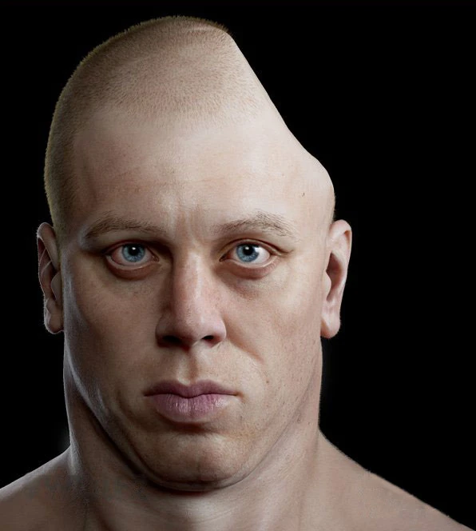
Max Hass es un personaje muy importante dentro de la resistencia, especialmente por su presencia en la base y su papel como figura emocional dentro del grupo. Es silencioso, peculiar y posee una sensibilidad que contrasta con el ambiente violento en el que vive.
Su importancia narrativa está en que ayuda a humanizar el refugio de la resistencia. No es un gran estratega ni un soldado central, pero sí alguien que forma parte del tejido humano de la rebelión. En un mundo lleno de brutalidad, personajes como Max demuestran que todavía queda espacio para la ternura y la rareza.
Bombate

Bombate es uno de los aliados más recordados por su personalidad y su vínculo con la resistencia. Es un personaje con carisma, humor y lealtad, lo que lo convierte en una presencia muy importante dentro del grupo.
Narrativamente, Bombate ayuda a mostrar que la resistencia no es solo guerra y sacrificio; también es comunidad. Su existencia le da textura al mundo y refuerza la sensación de que los rebeldes no son una máquina militar, sino personas reales que viven, bromean y sufren juntas.
Grace Walker
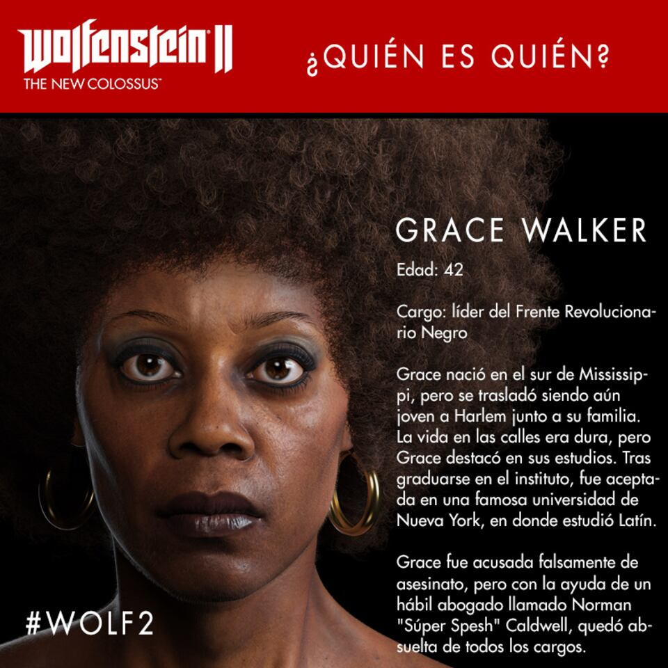
Grace Walker es una de las líderes más duras y potentes de la resistencia. Su papel en The New Colossus la convierte en una figura importante dentro de la lucha organizada contra el régimen nazi. Es directa, decidida y no tiene tiempo para ilusiones.
Su importancia narrativa está en que representa la resistencia negra y la lucha dentro de Estados Unidos ocupado, mostrando que la opresión nazi afecta a todos los niveles de la sociedad. Grace aporta fuerza, liderazgo y una perspectiva distinta dentro del grupo.
Horton Boone
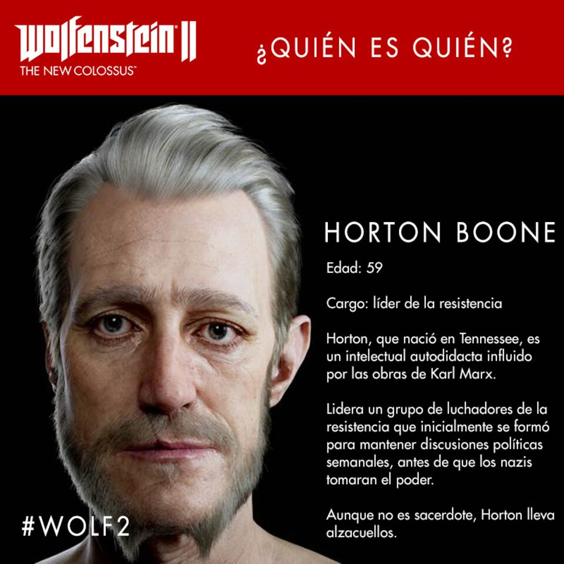
Horton Boone es otro de los grandes líderes de la resistencia. Su papel está ligado a la organización, el mando y la lucha por liberar a los oprimidos dentro de la nación ocupada. Es un personaje fuerte, con presencia política y militar.
Narrativamente, Horton ayuda a ampliar la escala de la rebelión. Ya no se trata solo de sobrevivir o de atacar objetivos aislados, sino de entender que la resistencia es una red más grande, con líderes distintos y objetivos complementarios.
Fergus Reid
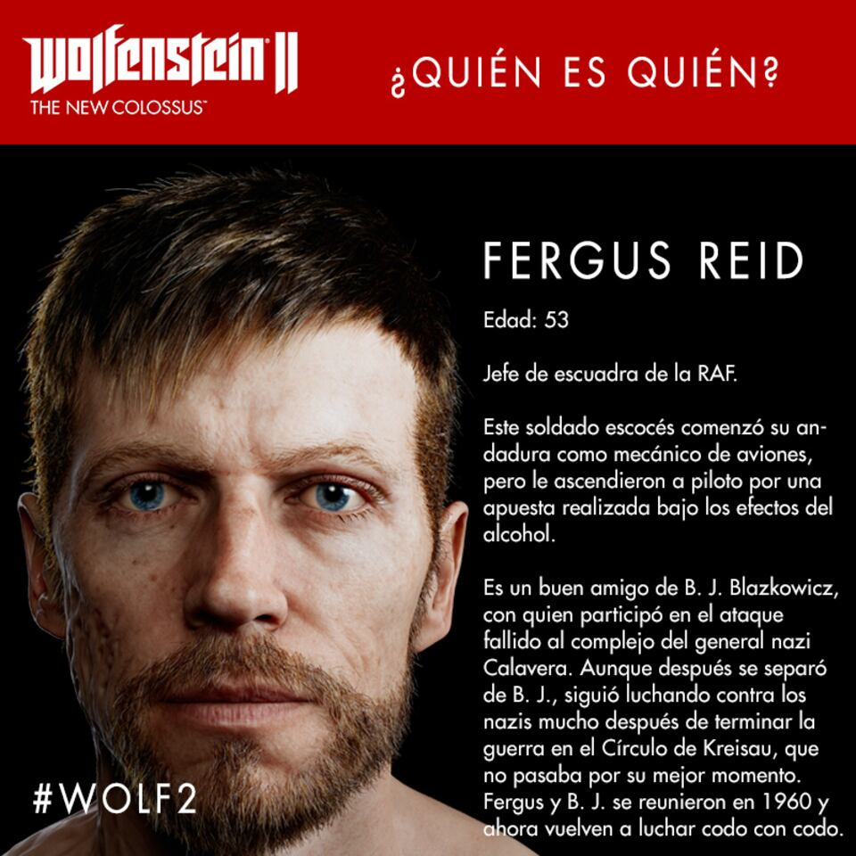
Fergus Reid es uno de los compañeros más importantes de B.J., especialmente en la línea temporal donde sobrevive. Es leal, valiente y tiene una personalidad muy marcada dentro del grupo. Su relación con Blazkowicz se basa en la camaradería de guerra y la confianza ganada en combate.
En The New Order, su destino puede cambiar según la elección del jugador, pero su figura sigue siendo esencial para entender la estructura de la resistencia. Fergus representa a los soldados que siguen peleando incluso cuando todo parece perdido.
Wyatt / Wyatt Prendergast
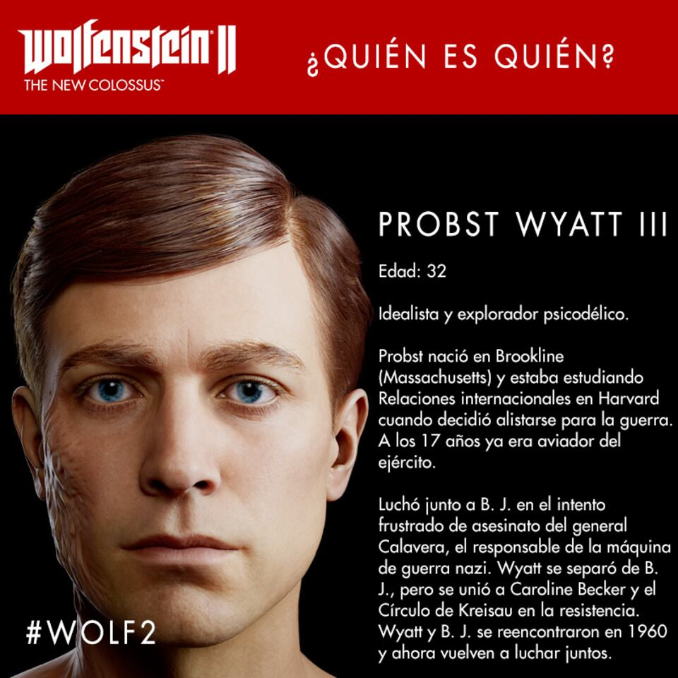
Wyatt es la otra opción posible al inicio de The New Order, y su destino cambia según la elección del jugador. Es un personaje más joven, más vulnerable y emocionalmente distinto a Fergus, lo que lo convierte en un contraste interesante dentro del grupo.
Narrativamente, Wyatt muestra otra forma de sobrevivir a la guerra: menos endurecida, más frágil, pero todavía relevante dentro del conflicto. Su presencia ayuda a reforzar la idea de que la resistencia está formada por personas muy distintas entre sí.
Anya y B.J. como núcleo emocional
La relación entre Anya y B.J. es una de las piezas emocionales más importantes de toda la saga. Ella le ofrece algo que casi nunca había tenido: un lugar al que regresar. Él, por su parte, representa la violencia inevitable que rodea a todos, pero también la posibilidad de cambiar.
Narrativamente, esta relación le da a Wolfenstein una humanidad mucho más profunda. La guerra no solo destruye cuerpos; también pone a prueba la capacidad de amar, cuidar y construir algo nuevo.
Jessica Valiant / Agent Silent Death
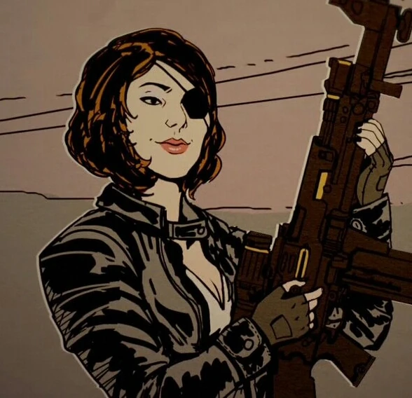
Jessica Valiant, conocida como Agent Silent Death, es la protagonista de uno de los episodios de The Freedom Chronicles. Su historia amplía el universo mostrando una forma distinta de resistencia: sigilosa, calculada y letal.
Su importancia está en que representa una cara distinta de la guerra contra los nazis. No todos combaten con explosiones y fuerza bruta; algunos lo hacen desde el secreto y la precisión quirúrgica.
Joseph Stallion / Gunslinger Joe
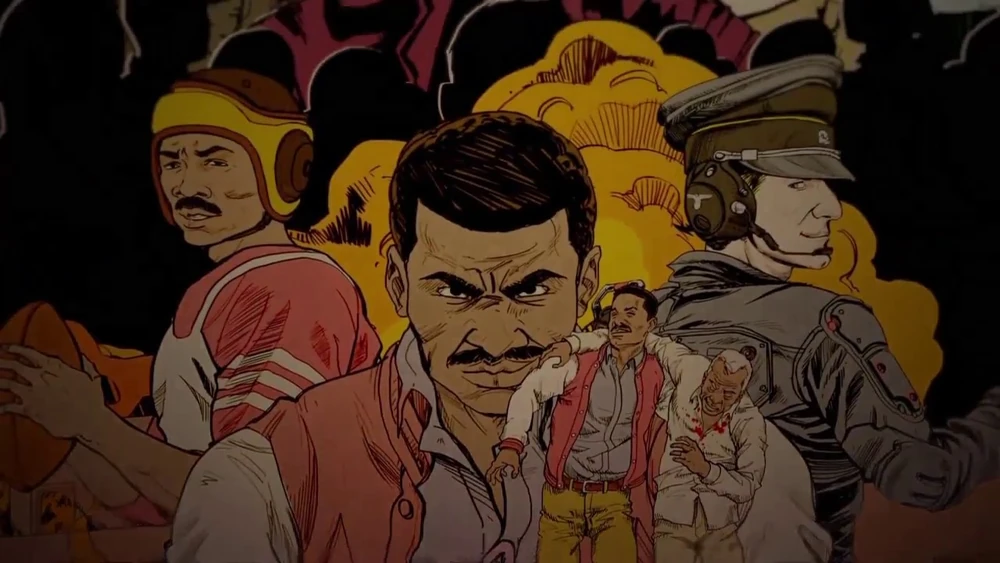
Joseph Stallion, conocido como Gunslinger Joe, es el protagonista del otro episodio de The Freedom Chronicles. Antiguo deportista convertido en combatiente, su estilo es más directo, más violento y más exagerado.
Su personalidad aporta un tono muy particular a la saga, porque mezcla humor negro, brutalidad física y una especie de heroísmo de fuerza pura.
Gerald Wilkins / Captain Wilkins
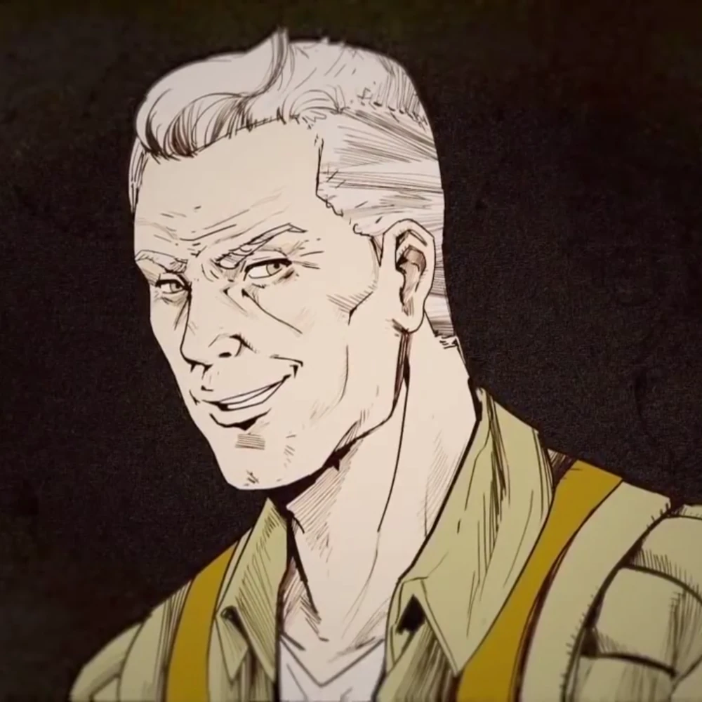
Gerald Wilkins, conocido como Captain Wilkins, representa al soldado clásico dentro del universo de los DLCs. Su historia es más táctica y militar, con una misión directa contra la estructura nazi.
Narrativamente, ayuda a completar la visión de que la resistencia tiene muchos rostros distintos: intelectuales, soldados, asesinos silenciosos y combatientes brutales.
Jess Blazkowicz
Jess es una de las hijas de B.J. y la protagonista de Youngblood junto a su hermana. Su historia está marcada por el legado de su padre, pero también por la necesidad de encontrar una identidad propia dentro de ese peso heredado.
Jess representa una nueva generación que ya no lucha desde el trauma puro, sino desde la continuidad del conflicto. Su papel muestra que la resistencia no termina con una persona, sino que sigue viva en quienes la heredan.
Soph Blazkowicz
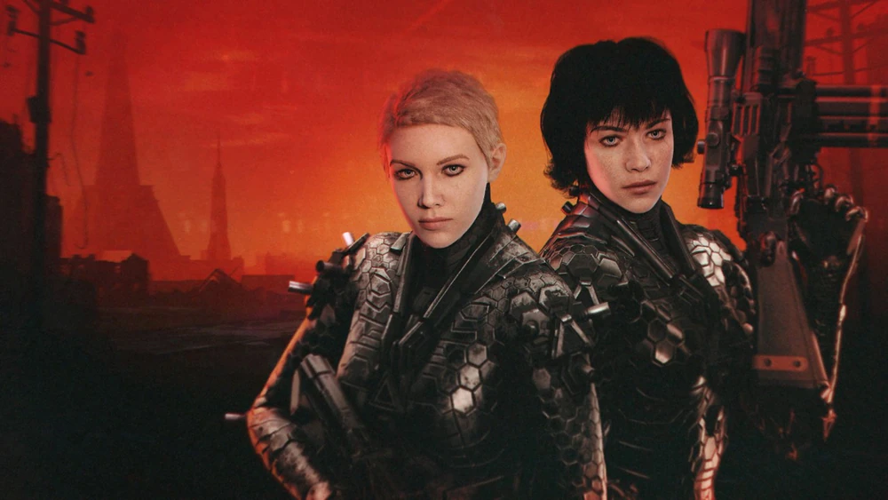
Soph es la otra hija de B.J. en Youngblood. Su personalidad complementa la de Jess, y juntas forman el nuevo centro narrativo de la saga. Soph ayuda a mostrar que el legado de Blazkowicz no es una carga pasiva, sino una historia que sigue evolucionando.
Su importancia está en que lleva adelante la lucha de una nueva generación que creció dentro de la resistencia, pero que aún debe descubrir qué clase de heroínas quiere ser.
Helga von Schabbs
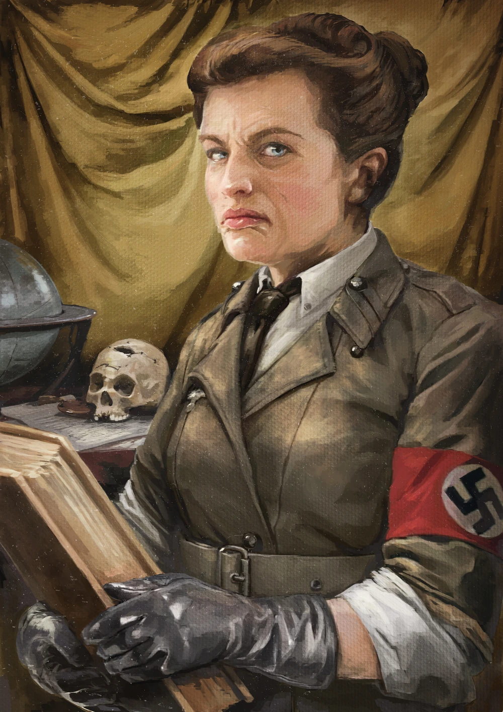
Helga von Schabbs es la principal antagonista de Wolfenstein: The Old Blood y uno de los personajes más inquietantes de la saga. A diferencia de otros villanos centrados en la tecnología o el poder militar, Helga representa la obsesión por lo oculto, lo ancestral y lo desconocido.
Arqueóloga de alto rango dentro del régimen nazi, Helga está convencida de que el verdadero poder no se encuentra solo en la ciencia, sino en fuerzas antiguas que preceden a la historia moderna. Su trabajo la lleva a investigar reliquias, rituales y secretos enterrados que el propio régimen apenas comprende.
Durante los eventos de The Old Blood, Helga lidera una expedición en busca de un artefacto ancestral capaz de otorgar poder más allá de lo humano. Su obsesión la lleva a ignorar cualquier tipo de límite moral, desatando fuerzas que terminan convirtiéndose en una amenaza incluso para los propios nazis.
Uno de los aspectos más importantes de su personaje es que no actúa por simple obediencia al régimen. A diferencia de figuras como Frau Engel o Deathshead, Helga tiene una motivación más personal: la búsqueda de conocimiento y poder absoluto, sin importar las consecuencias.
Narrativamente, Helga funciona como el puente entre el horror sobrenatural y la guerra tecnológica que caracteriza a Wolfenstein. Su presencia introduce una atmósfera más oscura, donde el enemigo ya no es solo humano, sino algo mucho más antiguo y peligroso.
Su legado dentro de la saga es importante porque demuestra que el régimen nazi no solo buscaba dominar el mundo con máquinas y armas, sino también con fuerzas que ni siquiera podían controlar.
Rudi Jäger
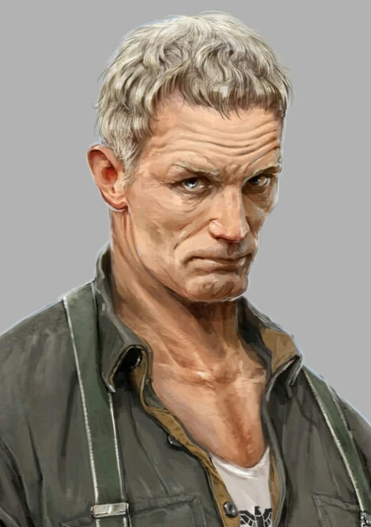
Rudi Jäger es uno de los antagonistas principales de Wolfenstein: The Old Blood y el carcelero del Castillo Wolfenstein. Su figura representa la brutalidad directa del régimen nazi en su forma más física y despiadada.
A diferencia de Helga von Schabbs, que está obsesionada con lo oculto, Rudi es un hombre de acción: violento, cruel y completamente leal al sistema. Su rol dentro del castillo es mantener el control absoluto sobre los prisioneros, utilizando el miedo, la tortura y la fuerza para imponer autoridad.
Rudi no es solo un soldado más. Está acompañado por una criatura monstruosa conocida como el "Monster", una bestia que utiliza como arma para cazar y eliminar a cualquiera que intente escapar. Esta relación lo convierte en un enemigo aún más peligroso, combinando inteligencia humana con fuerza brutal.
Durante la historia, Blazkowicz se enfrenta a Rudi en uno de los momentos más intensos del juego. El enfrentamiento refleja perfectamente el contraste entre ambos: Rudi representa la opresión y el control absoluto, mientras que B.J. encarna la resistencia y la supervivencia.
Narrativamente, Rudi Jäger cumple el papel de antagonista inmediato dentro del castillo. Es el obstáculo directo que el jugador debe superar para escapar, y su presencia constante genera tensión desde el momento en que Blazkowicz es capturado.
Aunque no tiene la profundidad ideológica de otros villanos, su impacto es fuerte porque representa la cara más directa y física del terror nazi: la violencia sin filtros.
Resumen de la importancia de los personajes
Los personajes de Wolfenstein no son solo nombres dentro de una guerra futurista. Cada uno representa una fuerza narrativa distinta: la resistencia, el fanatismo, la ciencia, la familia, la opresión, la esperanza o la continuidad del legado. B.J. es el corazón de la saga, pero sin Anya, Set, Caroline, Frau Engel, Deathshead, Grace, Horton, Fergus, Wyatt, Jess y Soph, la historia no tendría la misma profundidad.
Juntos construyen un universo donde cada victoria tiene un costo y cada derrota deja una huella. Eso es lo que hace que Wolfenstein funcione tan bien: no solo por su acción, sino por la humanidad de sus personajes.